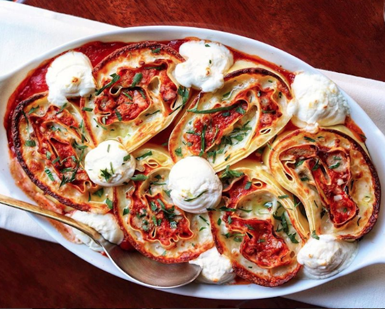

Home
Lasagna

Don Angie Lasagna
Make the most of a lazy Sunday with this wonderful homemade lasagna with fresh pasta, bolognese, béchamel and tomato
sauce.
Ingredients
For the Pasta
- Kosher salt, for the pasta water
- Northern-Style Egg Yolk Pasta or 8 store-bought fresh pasta sheets (12 × 7 inches)
- 1 cup plus 3 tablespoons Besciamella, chilled (recipe follows)
- 4 cups shredded whole milk mozzarella cheese
- 1 cup finely grated Parmigiano-Reggiano cheese
- 4 cups Italian Sausage Bolognese, chilled (recipe follows)
- 2 cups 10-Minute San Marzano Tomato Sauce, chilled (recipe follows)
- ½ cup robiolina cheese or whipped cream cheese
- 2 tablespoons roughly chopped parsley 3 tablespoons extra-virgin olive oil, for finishing
For the Besciamella
- ½ cup (1 stick) unsalted butter, cubed
- 1 head garlic, halved horizontally
- ⅓ cup thinly sliced shallots (about 1 medium shallot)
- 1 bay leaf
- 1 thyme sprig
- ¼ teaspoon black peppercorns
- 1 teaspoon kosher salt
- ½ cup all-purpose flour, “00” flour, or Wondra
- 2 cups cold whole milk
Steps
- For the pasta: In a large pot, bring 4 quarts water and 1 cup kosher salt to a boil over high heat. Meanwhile, set up an
ice bath in a large bowl. Line a sheet pan with parchment paper.
- Working with one sheet at a time, place a pasta sheet in the boiling water for 15 seconds, then immediately remove
and chill in the ice bath for 15 seconds. Transfer to the lined sheet pan and pat dry with a paper towel. Cover with another
layer of parchment paper and repeat with the remaining pasta, creating a stack of sheets, each patted dry and each layer
separated by parchment.
- On a clean countertop, lay out one pasta sheet with a short side facing you (the sheet should look like a portrait
shot). Spread ¼ cup of the besciamella in a thin layer evenly across the sheet. Sprinkle 1 cup of the mozzarella and ¼
cup of parmesan over the besciamella.
- Place another sheet of pasta on top. Spread 1 cup of the Bolognese evenly across the second pasta sheet, leaving a
2-inch border uncovered at the top short edge. Spoon 2 teaspoons of the besciamella onto the uncovered edge (this will
act like your “glue” to seal the roll closed).
- Starting at the bottom, roll up the layered pasta into a thick log (like a jelly roll). Transfer to a small sheet pan
seam-side down. Place in the refrigerator to chill for at least 1 and up to 2 hours, which will firm it up and make it
easier to slice.
- Repeat the process with the remaining pasta sheets to make a total of 4 rolls, transferring to the refrigerator as you
finish each roll. (The rolls can be tightly wrapped in plastic at this point and refrigerated for up to 2 days, or
frozen for up to 3 months, before cooking. If frozen, thaw in the refrigerator before slicing.)
- For the besciamella: In a small heavy-bottomed pot, melt the butter over medium heat. Add the garlic, shallots, bay
leaf, thyme, peppercorns, and salt. Cook over low heat until the shallots are translucent, about 2 minutes.
- Add the flour and stir well. Increase the heat to medium and cook, stirring continually with a wooden spoon or silicone
spatula, until the flour forms a smooth paste and turns lightly golden brown, about 5 minutes. Stir in the milk and cook
for 5 minutes, stirring continually, until the besciamella is thick enough to coat the back of a spoon. Remove from the
heat and strain through a fine-mesh sieve.
- Place in the refrigerator to cool. Besciamella keeps, tightly covered in the refrigerator, for up to 3 days, or in the
freezer for up to 3 months.